Das gesunde Frühstück der Klasse 1a von Frau Pakebusch wurde heute vorbereitet und allen Schülerinnen und Schülern präsentiert. Die leckeren Brotscheiben dekoriert mit Gemüse sahen aus wie kleine Gesichter. Lecker!! Danke an die 1a und alle Helferinnen.
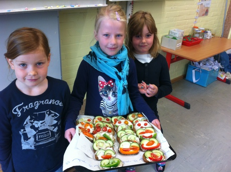
Am 5. Juni war es dann auch für die Klasse 1b soweit. Die Schülerinnen und Schüler durften ein gesundes Frühstück vorbereiten. Gespannt wurde das Ergebnis erwartet. Es gab leckere Mini-Burger mit Tomate, Gurke, Wurst und Käse. Schaut mal, wie toll das aussah:
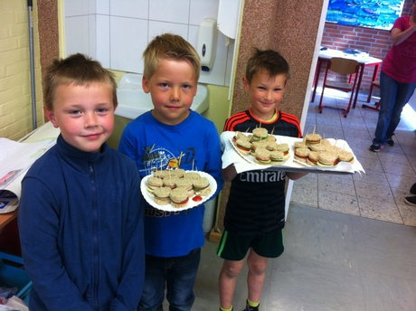
Das gesunde Frühstück ging vergangenen Freitag in die nächste Runde. Diesmal bereitete die Klasse 2a von Herrn Gerken leckere Gemüsespieße für die gesamte Schule vor. Hier ein paar Fotos:
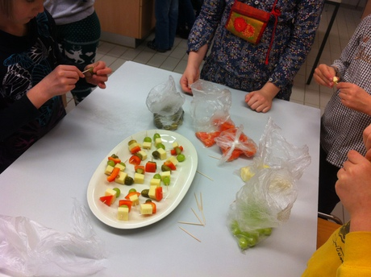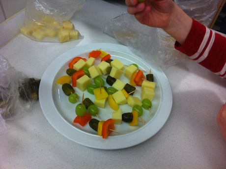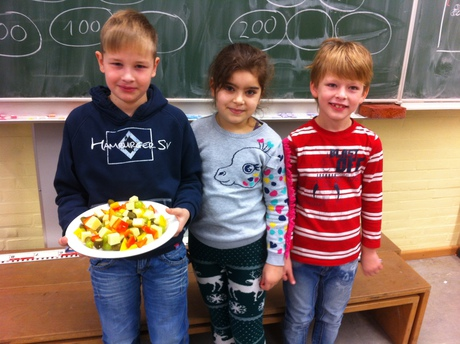
Das gesunde Frühstück ging im März nun bereits in die 6. Runde. Und wieder gab es ein leckeres Frühstück für die Schülerinnen und Schüler unserer Schule vorbereitet von der Klasse 2b von Frau Grelck. Ganz gespannt wurde erwartet, was die Klasse zauberte: Es gab Gemüsespieße. Lecker!! Danke an die 2b und alle Helferinnen.
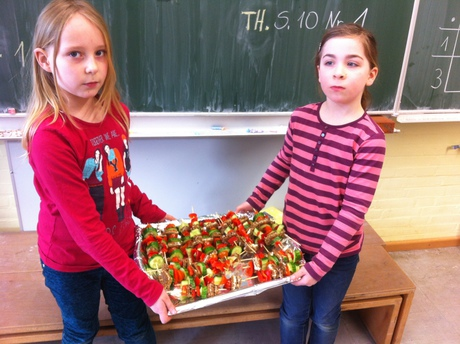
Das gesunde Frühstück ging am vergangenen Freitag in die 3. Runde. Dieses Mal bereitete die Klasse 3a etwas für die Schülerinnen und Schüler unserer Schule vor. Es gab leckere Quarkcreme mit Früchten. Hier ein paar Bilder von der Vorbereitung:
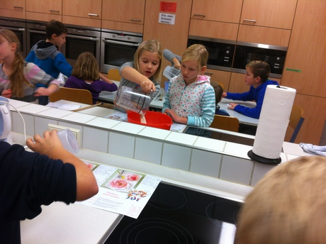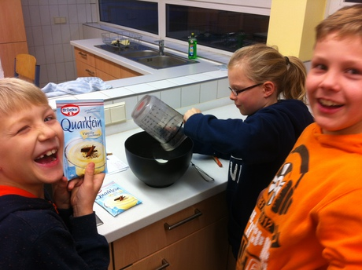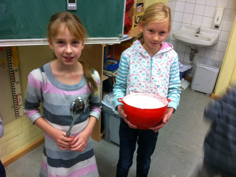
Diesen Monat wurde das gesunde Frühstück von der Klasse 3b von Frau Rosolowsky vorbereitet. Für jede Schülerin und jeden Schüler gab es Obst- und Gemüseigel. Das sah richtig lecker und gesund aus. Und geschmeckt hat es auch wieder.
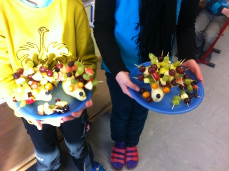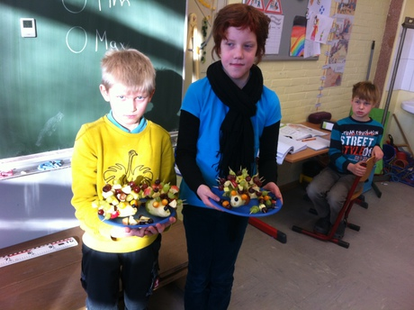
Seit diesem Schuljahr findet jeden Monat ein gesundes Frühstück an unserer Schule statt. Abwechselnd bereitet jeweils eine Schulklasse mit Unterstützung von Eltern ein gesundes Frühstück für die ganze Schule vor. Von bunten Gemüse- und Obstspießen und anderen Knabbereien wird für ein leckeres Frühstück gesorgt- sehr zur Freude der Kinder. Hier ein paar Eindrücke von der Vorbereitung des Frühstücks der Klasse 4a von Frau Machedanz:
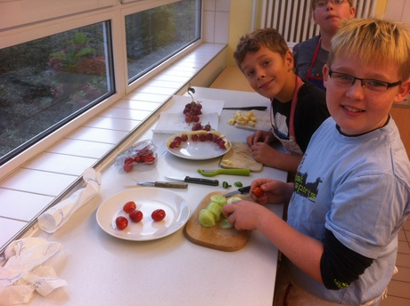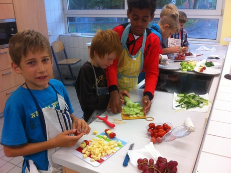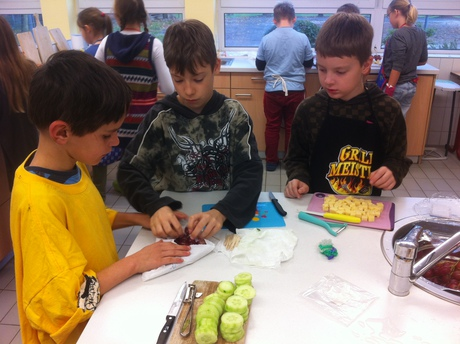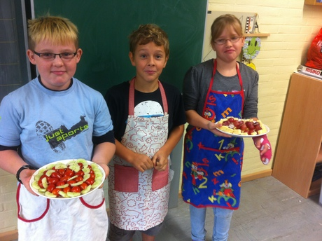
Das zweite gesunde Frühstück wurde diesmal von der Klasse 4b vorbereitet. Es gab Raupen, Blumen, Autos und Schneemänner. Natürlich aus Obst und Gemüse gebastelt. Lecker war's! :-) Danke an die Schülerinnen und Schüler, der Klassenlehrerin Frau Gülzow und allen anderen Helfern. Hier ein paar Bilder von der Vorbereitung:
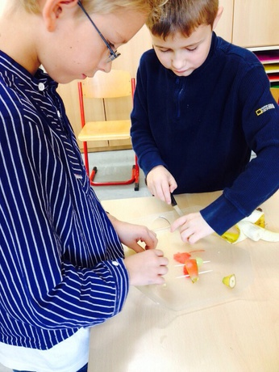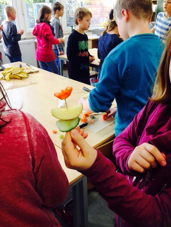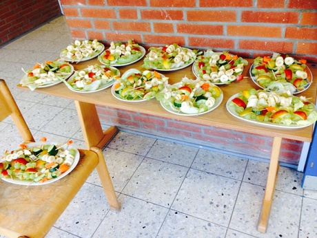